Back to Nakanai '93 Contents Page
Back to Nakanai '93 Contents
Page
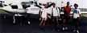 | The team from the UK. From left to right: Jon, Nigel, Nick and James. |
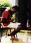 | Paulus labelling specimens which he collected for the University of Papua New Guinea. |
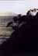 | Getting to PNG involved a short stop over in New Zealand. |
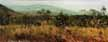 | Dry savannah outside Port Moresby. |
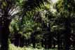 | The Oilpalm plantation at Hargy Oilpalm in Bialla. |
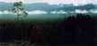 | Lowland rainforest at the edge of the Hargy Oil Palm Plantations, New Britain. The Nakanai Mountains are in the background |
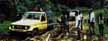 | Heading for the Nakanais. our truck got stuck just outside Kamatami village; from here onwards we were on foot. |
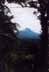 | During the tough trek into the Nakanais we were rewarded with some stunning views. Mount Ulawun (The Father). |
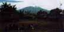 | An outpost of Lele village. |
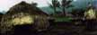 | The huts at Mukul (1100m) are built low for warmth. |
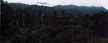 | End of the Road. Mukul village with the central Nakanai behind |
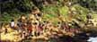 | Mille villagers gathering to wave goodbye |
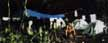 | Our camp by Lake Hargy |
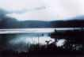 | Early morning mists lift from Lake Hargy |
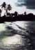 | The beach at Kokapo. |
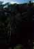 | Primary Forest at Wild Dog |
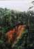 | A land slip at Wild Dog, probably caused by removal of vegetation at the top of the ridge to make way for the road. |
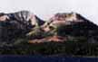 | Vulcan volcano, Rabaul. This erupted again in 1994 devastating much of the town. |